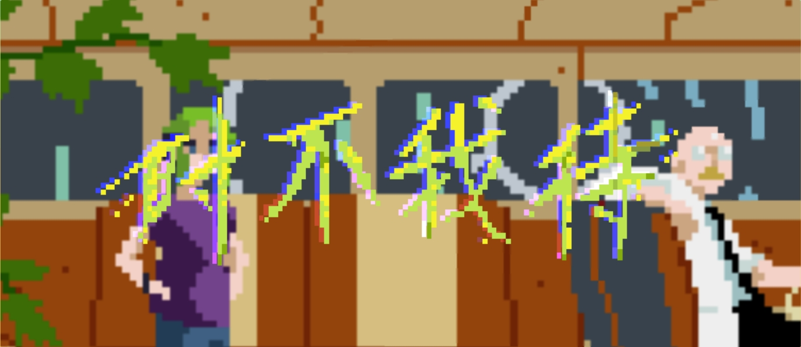
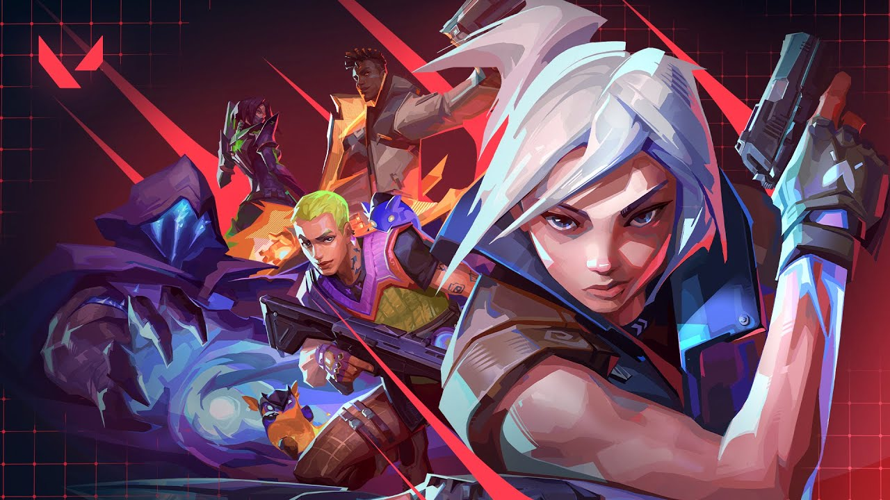
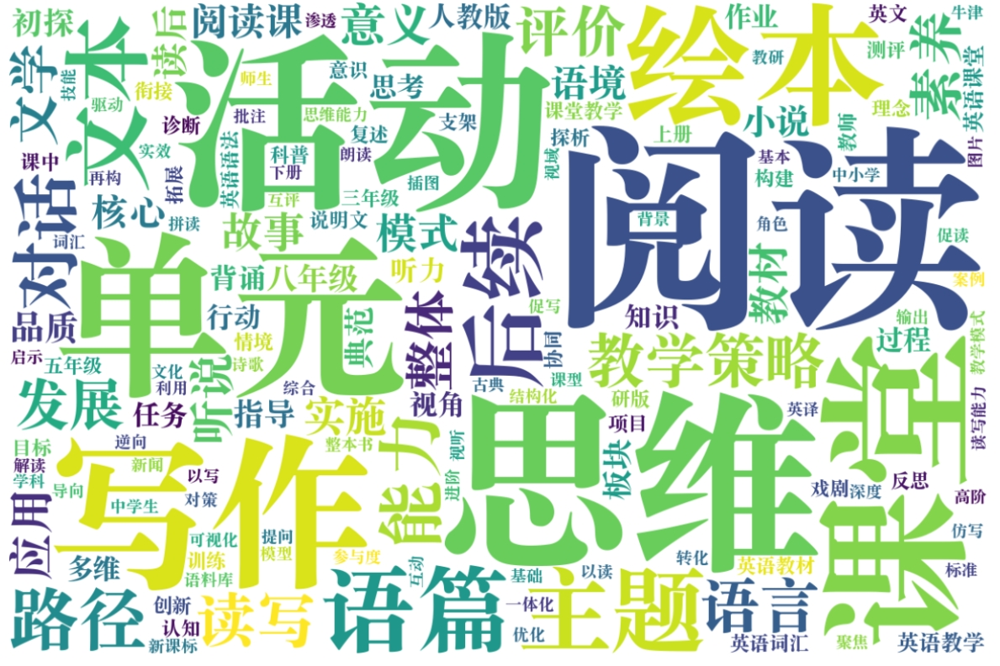
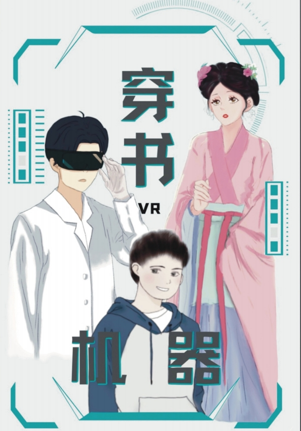

01
01
VCT 电竞语义网
UCL 数字人文课程项目。独立设计《无畏契约》选手与俱乐部本体（Ontology）， 在图数据库中录入选手信息，将联盟架构、战队归属与选手转会关系结构化为可查询数据。
UCL · 2026Ontology
从游戏本地化、赛事数据结构化，到新媒体从 0 到 1—— 下面这些项目共同说明一件事：我习惯把一个模糊的需求拆成可执行的步骤，然后自己做完它。
// 06 ENTRIES · 2021 — 2026
01
UCL 数字人文课程项目。独立设计《无畏契约》选手与俱乐部本体（Ontology）， 在图数据库中录入选手信息，将联盟架构、战队归属与选手转会关系结构化为可查询数据。

02
03硕士论文研究《无畏契约》在中国市场的语言、文化与技术本地化； 课程论文对比 SDL Trados 与 MemoQ 在游戏更新公告本地化中的适用性。

04
05负责账号从 0 到 1 的内容策划、发布排期与数据复盘， 增长至 1,300 粉丝，单篇最高曝光 1.2 万； 兼任 AI 小组组长，获公司 AIGC 大赛一等奖。